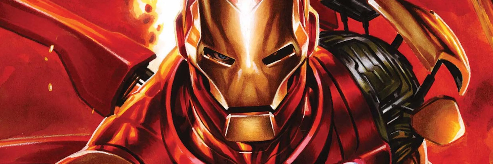

Bem-vindo à IronTech, a principal distribuidora e vitrine tecnológica de armaduras de alta performance inspiradas no herói que mudou o mundo. Nascida como um projeto de inovação, nossa empresa tem a missão de apresentar e comercializar conceitos e réplicas das armaduras mais famosas do universo do Homem de Ferro, unindo engenharia, design futurista e o legado da tecnologia Stark. Nossa plataforma digital foi criada para entusiastas, colecionadores e investidores que buscam conhecer de perto a evolução de cada projeto — desde a rústica Mark I, construída em uma caverna, até os modelos mais avançados feitos com nanotecnologia.
Toda a magia e a engenharia da IronTech ganham vida no coração de Nova York: a Torre Stark. Nosso centro de fabricação ocupa os andares superiores do arranha-céu, utilizando laboratórios de ponta totalmente automatizados pelo sistema de inteligência artificial J.A.R.V.I.S.
É lá, nas oficinas de alta tecnologia do próprio Tony Stark, que fundimos as ligas de titânio e ouro, testamos a estabilidade dos repulsores e moldamos cada detalhe das armaduras. Da prancheta digital até os testes finais de voo na pista da cobertura, a Torre Stark é o berço onde a ficção se transforma em realidade.
Visite a nossa localização